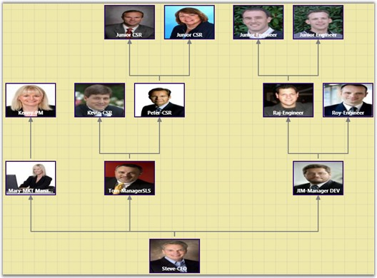
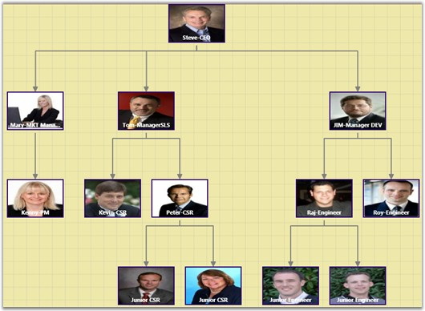

The Layout Manager lets you orient the tree in many directions and can be used for the creation of many sophisticated arrangements. The Orientation property of Diagram Model can be used to specify the tree orientation.
Table 53: Property Table
|
Property |
Description |
Type of the property |
Value it accepts |
Any other dependencies/ sub properties associated |
|
Orientation |
Gets or sets the orientation. |
CLR property |
TreeOrientation.LeftRight TreeOrientation.RightLeft TreeOrientation.TopBottom TreeOrientation.BottomTop |
No |
Following are the four orientations supported.
· TopBottom—Places the root node at the top and the child nodes are arranged below the root node.
· BottomTop—Places the root node at the Bottom and the child nodes are arranged above the root node.
· LeftRight—Places the root node at the Left and the child nodes are arranged on the right side of the root node.
· RightLeft—Places the root node at the Right and the child nodes are arranged on the left side of the root node.
The Bounds property of the DiagramView class can be used to specify the position of the root node based on which the entire tree gets generated.
The tree orientation can be set using the following code.
|
[XAML] <!--Diagram Control--> <syncfusion:DiagramControl Name="diagramControl">
<!-- Model to add nodes and connections--> <syncfusion:DiagramControl.Model> <syncfusion:DiagramModel LayoutType="DirectedTreeLayout" Orientation="BottomTop" x:Name="diagramModel"> </syncfusion:DiagramModel> </syncfusion:DiagramControl.Model> <!--View to display nodes and connections added through model.--> <syncfusion:DiagramControl.View> <syncfusion:DiagramView Name="diagramView"> </syncfusion:DiagramView> </syncfusion:DiagramControl.View> </syncfusion:DiagramControl>
|
|
[C#]
DiagramModel diagramModel = new DiagramModel(); diagramModel.Orientation = TreeOrientation.BottomTop; |
|
[VB]
Dim diagramModel As New DiagramModel() diagramModel.Orientation = TreeOrientation.BottomTop |
The tree orientation can be changed dynamically at run time using the following code for corresponding orientation types.
The following code may be specified in a Combobox SelectionChanged event.
|
[C#]
DirectedTreeLayout tree = new DirectedTreeLayout(diagramModel, diagramView); diagramModel.Orientation = TreeOrientation.RightLeft; tree.PrepareActivity(tree); tree.StartNodeArrangement(); (diagramView.Page as DiagramPage).InvalidateMeasure(); (diagramView.Page as DiagramPage).InvalidateArrange(); |
|
[VB]
Dim tree As New DirectedTreeLayout(diagramModel, DiagramView) diagramModel.Orientation = TreeOrientation.RightLeft tree.PrepareActivity(tree) tree.StartNodeArrangement() TryCast(diagramView.Page, DiagramPage).InvalidateMeasure() TryCast(diagramView.Page, DiagramPage).InvalidateArrange() |
The orientations are illustrated below.

Figure 121: BottomTop Orientation

Figure 122: TopBottom Orientation
Figure 123: LeftRight Orientation
Figure 124: RightLeft Orientation